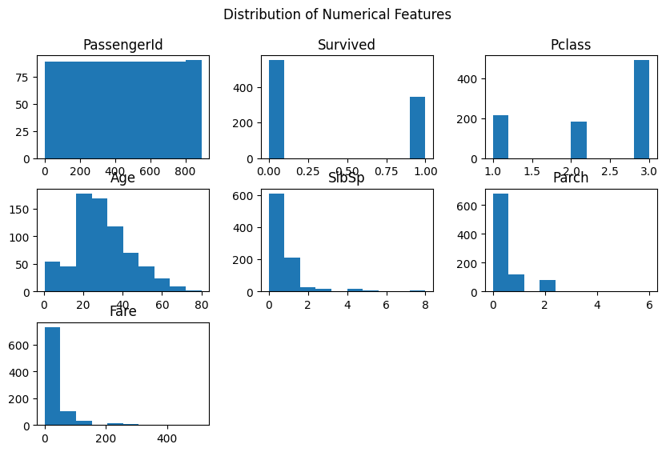
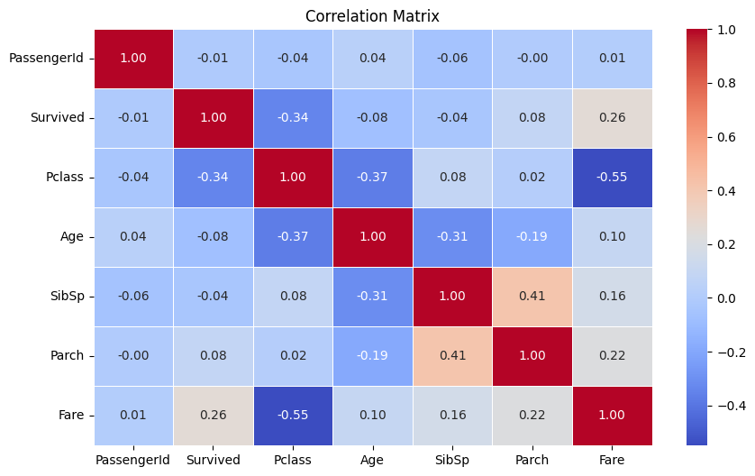

Titanic Survival Prediction - Full Implementation#
import pandas as pd
from sklearn.model_selection import train_test_split
from sklearn.linear_model import LogisticRegression, RidgeClassifier
from sklearn.ensemble import RandomForestClassifier
from xgboost import XGBClassifier
from sklearn.metrics import accuracy_score, f1_score
from sklearn.preprocessing import StandardScaler, OneHotEncoder
from sklearn.compose import ColumnTransformer
from sklearn.pipeline import Pipeline
import pandas as pd
# Load the dataset
file_path = 'Titanic-Dataset.csv'
data = pd.read_csv(file_path)
# Step 1: Remove unnecessary columns
data = data.drop(columns=['Name', 'Ticket', 'Cabin'])
# Step 2: Normalize the dataset to 3NF
# Table 1: Passenger Information
passenger_info = data[['PassengerId', 'Pclass', 'Sex', 'Age', 'SibSp', 'Parch', 'Embarked']]
# Table 2: Survival Information
survival_info = data[['PassengerId', 'Survived']]
# Table 3: Fare Information
fare_info = data[['PassengerId', 'Fare']]
# Save or display the tables
passenger_info.to_csv('passenger_info.csv', index=False)
survival_info.to_csv('survival_info.csv', index=False)
fare_info.to_csv('fare_info.csv', index=False)
# Display the first few rows of each table
print("Passenger Information Table:")
print(passenger_info.head())
print("\nSurvival Information Table:")
print(survival_info.head())
print("\nFare Information Table:")
print(fare_info.head())
---------------------------------------------------------------------------
FileNotFoundError Traceback (most recent call last)
Cell In[2], line 5
3 # Load the dataset
4 file_path = 'Titanic-Dataset.csv'
----> 5 data = pd.read_csv(file_path)
7 # Step 1: Remove unnecessary columns
8 data = data.drop(columns=['Name', 'Ticket', 'Cabin'])
File /opt/anaconda3/lib/python3.12/site-packages/pandas/io/parsers/readers.py:1026, in read_csv(filepath_or_buffer, sep, delimiter, header, names, index_col, usecols, dtype, engine, converters, true_values, false_values, skipinitialspace, skiprows, skipfooter, nrows, na_values, keep_default_na, na_filter, verbose, skip_blank_lines, parse_dates, infer_datetime_format, keep_date_col, date_parser, date_format, dayfirst, cache_dates, iterator, chunksize, compression, thousands, decimal, lineterminator, quotechar, quoting, doublequote, escapechar, comment, encoding, encoding_errors, dialect, on_bad_lines, delim_whitespace, low_memory, memory_map, float_precision, storage_options, dtype_backend)
1013 kwds_defaults = _refine_defaults_read(
1014 dialect,
1015 delimiter,
(...)
1022 dtype_backend=dtype_backend,
1023 )
1024 kwds.update(kwds_defaults)
-> 1026 return _read(filepath_or_buffer, kwds)
File /opt/anaconda3/lib/python3.12/site-packages/pandas/io/parsers/readers.py:620, in _read(filepath_or_buffer, kwds)
617 _validate_names(kwds.get("names", None))
619 # Create the parser.
--> 620 parser = TextFileReader(filepath_or_buffer, **kwds)
622 if chunksize or iterator:
623 return parser
File /opt/anaconda3/lib/python3.12/site-packages/pandas/io/parsers/readers.py:1620, in TextFileReader.__init__(self, f, engine, **kwds)
1617 self.options["has_index_names"] = kwds["has_index_names"]
1619 self.handles: IOHandles | None = None
-> 1620 self._engine = self._make_engine(f, self.engine)
File /opt/anaconda3/lib/python3.12/site-packages/pandas/io/parsers/readers.py:1880, in TextFileReader._make_engine(self, f, engine)
1878 if "b" not in mode:
1879 mode += "b"
-> 1880 self.handles = get_handle(
1881 f,
1882 mode,
1883 encoding=self.options.get("encoding", None),
1884 compression=self.options.get("compression", None),
1885 memory_map=self.options.get("memory_map", False),
1886 is_text=is_text,
1887 errors=self.options.get("encoding_errors", "strict"),
1888 storage_options=self.options.get("storage_options", None),
1889 )
1890 assert self.handles is not None
1891 f = self.handles.handle
File /opt/anaconda3/lib/python3.12/site-packages/pandas/io/common.py:873, in get_handle(path_or_buf, mode, encoding, compression, memory_map, is_text, errors, storage_options)
868 elif isinstance(handle, str):
869 # Check whether the filename is to be opened in binary mode.
870 # Binary mode does not support 'encoding' and 'newline'.
871 if ioargs.encoding and "b" not in ioargs.mode:
872 # Encoding
--> 873 handle = open(
874 handle,
875 ioargs.mode,
876 encoding=ioargs.encoding,
877 errors=errors,
878 newline="",
879 )
880 else:
881 # Binary mode
882 handle = open(handle, ioargs.mode)
FileNotFoundError: [Errno 2] No such file or directory: 'Titanic-Dataset.csv'
import sqlite3
import pandas as pd
file_path = 'Titanic-Dataset.csv'
data = pd.read_csv(file_path)
# Normalize the dataset
passenger_info = data[['PassengerId', 'Pclass', 'Sex', 'Age', 'SibSp', 'Parch', 'Embarked']]
survival_info = data[['PassengerId', 'Survived']]
fare_info = data[['PassengerId', 'Fare']]
# Connect to SQLite database
conn = sqlite3.connect('titanic.db')
# Check if tables exist
query_check = "SELECT name FROM sqlite_master WHERE type='table';"
tables = pd.read_sql_query(query_check, conn)
print("Existing tables:", tables)
# Create tables if they don't exist
if 'passenger_info' not in tables.values:
passenger_info.to_sql('passenger_info', conn, if_exists='replace', index=False)
if 'survival_info' not in tables.values:
survival_info.to_sql('survival_info', conn, if_exists='replace', index=False)
if 'fare_info' not in tables.values:
fare_info.to_sql('fare_info', conn, if_exists='replace', index=False)
# Define the SQL join query
query = """
SELECT
passenger_info.PassengerId,
passenger_info.Pclass,
passenger_info.Sex,
passenger_info.Age,
passenger_info.SibSp,
passenger_info.Parch,
passenger_info.Embarked,
survival_info.Survived,
fare_info.Fare
FROM
passenger_info
JOIN
survival_info
ON
passenger_info.PassengerId = survival_info.PassengerId
JOIN
fare_info
ON
passenger_info.PassengerId = fare_info.PassengerId;
"""
# Execute the query and load the data into a Pandas DataFrame
df = pd.read_sql_query(query, conn)
# Close the database connection
conn.close()
# Display the first few rows of the DataFrame
print(df.head())
Existing tables: Empty DataFrame
Columns: [name]
Index: []
PassengerId Pclass Sex Age SibSp Parch Embarked Survived Fare
0 1 3 male 22.0 1 0 S 0 7.2500
1 2 1 female 38.0 1 0 C 1 71.2833
2 3 3 female 26.0 0 0 S 1 7.9250
3 4 1 female 35.0 1 0 S 1 53.1000
4 5 3 male 35.0 0 0 S 0 8.0500
import sqlite3
import pandas as pd
from sklearn.model_selection import train_test_split
# Display the first few rows of the DataFrame
print("Data Overview:")
print(df.head())
# Check for stratification need
print("\nSurvived Value Counts:")
print(df['Survived'].value_counts())
# Perform train/test split
X = df.drop(columns=['Survived', 'PassengerId'])
y = df['Survived']
# Stratify by 'Survived' to maintain class distribution in train/test split
X_train, X_test, y_train, y_test = train_test_split(X, y, test_size=0.2, stratify=y, random_state=42)
# Display the split results
print("\nTrain/Test Split:")
print("Training Set Size:", X_train.shape[0])
print("Testing Set Size:", X_test.shape[0])
Data Overview:
PassengerId Pclass Sex Age SibSp Parch Embarked Survived Fare
0 1 3 male 22.0 1 0 S 0 7.2500
1 2 1 female 38.0 1 0 C 1 71.2833
2 3 3 female 26.0 0 0 S 1 7.9250
3 4 1 female 35.0 1 0 S 1 53.1000
4 5 3 male 35.0 0 0 S 0 8.0500
Survived Value Counts:
Survived
0 549
1 342
Name: count, dtype: int64
Train/Test Split:
Training Set Size: 712
Testing Set Size: 179
import pandas as pd
import numpy as np
import matplotlib.pyplot as plt
import seaborn as sns
# Assuming `data` is already loaded as a DataFrame
df = pd.DataFrame(data)
# 1. Data Profiling - Summary Statistics
summary_stats = df.describe(include='all') # Include all columns for summary stats
# 2. Missing Values
missing_values = df.isnull().sum()
# 3. Distribution of Numerical Features (using histograms)
numerical_columns = df.select_dtypes(include=['number']).columns # Select only numerical columns
df[numerical_columns].hist(bins=10, figsize=(10, 6), grid=False)
plt.suptitle('Distribution of Numerical Features')
plt.show()
# 4. Correlation Matrix
correlation_matrix = df[numerical_columns].corr() # Only consider numerical columns
# Plotting the correlation matrix using a heatmap
plt.figure(figsize=(10, 6))
sns.heatmap(correlation_matrix, annot=True, cmap='coolwarm', fmt='.2f', linewidths=0.5)
plt.title('Correlation Matrix')
plt.show()
# 5. Outliers and Capping (using the 95th percentile for 'Fare')
if 'Fare' in df.columns:
fare_95th_percentile = df['Fare'].quantile(0.95)
df['Capped_Fare'] = df['Fare'].apply(lambda x: min(x, fare_95th_percentile))
# 6. Train/Test Split
train_df = df.sample(frac=0.8, random_state=42) # 80% for training
test_df = df.drop(train_df.index) # 20% for testing
# Display results
print(f"Summary Statistics:\n{summary_stats}")
print(f"Missing Values:\n{missing_values}")
if 'Fare' in df.columns:
print(f"95th Percentile for Fare: {fare_95th_percentile}")
print(f"Training Set Size: {train_df.shape[0]}")
print(f"Testing Set Size: {test_df.shape[0]}")


Summary Statistics:
PassengerId Survived Pclass Name Sex \
count 891.000000 891.000000 891.000000 891 891
unique NaN NaN NaN 891 2
top NaN NaN NaN Braund, Mr. Owen Harris male
freq NaN NaN NaN 1 577
mean 446.000000 0.383838 2.308642 NaN NaN
std 257.353842 0.486592 0.836071 NaN NaN
min 1.000000 0.000000 1.000000 NaN NaN
25% 223.500000 0.000000 2.000000 NaN NaN
50% 446.000000 0.000000 3.000000 NaN NaN
75% 668.500000 1.000000 3.000000 NaN NaN
max 891.000000 1.000000 3.000000 NaN NaN
Age SibSp Parch Ticket Fare Cabin \
count 714.000000 891.000000 891.000000 891 891.000000 204
unique NaN NaN NaN 681 NaN 147
top NaN NaN NaN 347082 NaN B96 B98
freq NaN NaN NaN 7 NaN 4
mean 29.699118 0.523008 0.381594 NaN 32.204208 NaN
std 14.526497 1.102743 0.806057 NaN 49.693429 NaN
min 0.420000 0.000000 0.000000 NaN 0.000000 NaN
25% 20.125000 0.000000 0.000000 NaN 7.910400 NaN
50% 28.000000 0.000000 0.000000 NaN 14.454200 NaN
75% 38.000000 1.000000 0.000000 NaN 31.000000 NaN
max 80.000000 8.000000 6.000000 NaN 512.329200 NaN
Embarked
count 889
unique 3
top S
freq 644
mean NaN
std NaN
min NaN
25% NaN
50% NaN
75% NaN
max NaN
Missing Values:
PassengerId 0
Survived 0
Pclass 0
Name 0
Sex 0
Age 177
SibSp 0
Parch 0
Ticket 0
Fare 0
Cabin 687
Embarked 2
dtype: int64
95th Percentile for Fare: 112.07915
Training Set Size: 713
Testing Set Size: 178
pip install mlflow
Collecting mlflow
Downloading mlflow-2.19.0-py3-none-any.whl.metadata (30 kB)
Collecting mlflow-skinny==2.19.0 (from mlflow)
Downloading mlflow_skinny-2.19.0-py3-none-any.whl.metadata (31 kB)
Requirement already satisfied: Flask<4 in /usr/local/lib/python3.10/dist-packages (from mlflow) (3.1.0)
Requirement already satisfied: Jinja2<4,>=2.11 in /usr/local/lib/python3.10/dist-packages (from mlflow) (3.1.4)
Collecting alembic!=1.10.0,<2 (from mlflow)
Downloading alembic-1.14.0-py3-none-any.whl.metadata (7.4 kB)
Collecting docker<8,>=4.0.0 (from mlflow)
Downloading docker-7.1.0-py3-none-any.whl.metadata (3.8 kB)
Collecting graphene<4 (from mlflow)
Downloading graphene-3.4.3-py2.py3-none-any.whl.metadata (6.9 kB)
Collecting gunicorn<24 (from mlflow)
Downloading gunicorn-23.0.0-py3-none-any.whl.metadata (4.4 kB)
Requirement already satisfied: markdown<4,>=3.3 in /usr/local/lib/python3.10/dist-packages (from mlflow) (3.7)
Requirement already satisfied: matplotlib<4 in /usr/local/lib/python3.10/dist-packages (from mlflow) (3.8.0)
Requirement already satisfied: numpy<3 in /usr/local/lib/python3.10/dist-packages (from mlflow) (1.26.4)
Requirement already satisfied: pandas<3 in /usr/local/lib/python3.10/dist-packages (from mlflow) (2.2.2)
Requirement already satisfied: pyarrow<19,>=4.0.0 in /usr/local/lib/python3.10/dist-packages (from mlflow) (17.0.0)
Requirement already satisfied: scikit-learn<2 in /usr/local/lib/python3.10/dist-packages (from mlflow) (1.6.0)
Requirement already satisfied: scipy<2 in /usr/local/lib/python3.10/dist-packages (from mlflow) (1.13.1)
Requirement already satisfied: sqlalchemy<3,>=1.4.0 in /usr/local/lib/python3.10/dist-packages (from mlflow) (2.0.36)
Requirement already satisfied: cachetools<6,>=5.0.0 in /usr/local/lib/python3.10/dist-packages (from mlflow-skinny==2.19.0->mlflow) (5.5.0)
Requirement already satisfied: click<9,>=7.0 in /usr/local/lib/python3.10/dist-packages (from mlflow-skinny==2.19.0->mlflow) (8.1.7)
Requirement already satisfied: cloudpickle<4 in /usr/local/lib/python3.10/dist-packages (from mlflow-skinny==2.19.0->mlflow) (3.1.0)
Collecting databricks-sdk<1,>=0.20.0 (from mlflow-skinny==2.19.0->mlflow)
Downloading databricks_sdk-0.40.0-py3-none-any.whl.metadata (38 kB)
Requirement already satisfied: gitpython<4,>=3.1.9 in /usr/local/lib/python3.10/dist-packages (from mlflow-skinny==2.19.0->mlflow) (3.1.43)
Requirement already satisfied: importlib_metadata!=4.7.0,<9,>=3.7.0 in /usr/local/lib/python3.10/dist-packages (from mlflow-skinny==2.19.0->mlflow) (8.5.0)
Requirement already satisfied: opentelemetry-api<3,>=1.9.0 in /usr/local/lib/python3.10/dist-packages (from mlflow-skinny==2.19.0->mlflow) (1.29.0)
Requirement already satisfied: opentelemetry-sdk<3,>=1.9.0 in /usr/local/lib/python3.10/dist-packages (from mlflow-skinny==2.19.0->mlflow) (1.29.0)
Requirement already satisfied: packaging<25 in /usr/local/lib/python3.10/dist-packages (from mlflow-skinny==2.19.0->mlflow) (24.2)
Requirement already satisfied: protobuf<6,>=3.12.0 in /usr/local/lib/python3.10/dist-packages (from mlflow-skinny==2.19.0->mlflow) (4.25.5)
Requirement already satisfied: pyyaml<7,>=5.1 in /usr/local/lib/python3.10/dist-packages (from mlflow-skinny==2.19.0->mlflow) (6.0.2)
Requirement already satisfied: requests<3,>=2.17.3 in /usr/local/lib/python3.10/dist-packages (from mlflow-skinny==2.19.0->mlflow) (2.32.3)
Requirement already satisfied: sqlparse<1,>=0.4.0 in /usr/local/lib/python3.10/dist-packages (from mlflow-skinny==2.19.0->mlflow) (0.5.3)
Collecting Mako (from alembic!=1.10.0,<2->mlflow)
Downloading Mako-1.3.8-py3-none-any.whl.metadata (2.9 kB)
Requirement already satisfied: typing-extensions>=4 in /usr/local/lib/python3.10/dist-packages (from alembic!=1.10.0,<2->mlflow) (4.12.2)
Requirement already satisfied: urllib3>=1.26.0 in /usr/local/lib/python3.10/dist-packages (from docker<8,>=4.0.0->mlflow) (2.2.3)
Requirement already satisfied: Werkzeug>=3.1 in /usr/local/lib/python3.10/dist-packages (from Flask<4->mlflow) (3.1.3)
Requirement already satisfied: itsdangerous>=2.2 in /usr/local/lib/python3.10/dist-packages (from Flask<4->mlflow) (2.2.0)
Requirement already satisfied: blinker>=1.9 in /usr/local/lib/python3.10/dist-packages (from Flask<4->mlflow) (1.9.0)
Collecting graphql-core<3.3,>=3.1 (from graphene<4->mlflow)
Downloading graphql_core-3.2.5-py3-none-any.whl.metadata (10 kB)
Collecting graphql-relay<3.3,>=3.1 (from graphene<4->mlflow)
Downloading graphql_relay-3.2.0-py3-none-any.whl.metadata (12 kB)
Requirement already satisfied: python-dateutil<3,>=2.7.0 in /usr/local/lib/python3.10/dist-packages (from graphene<4->mlflow) (2.8.2)
Requirement already satisfied: MarkupSafe>=2.0 in /usr/local/lib/python3.10/dist-packages (from Jinja2<4,>=2.11->mlflow) (3.0.2)
Requirement already satisfied: contourpy>=1.0.1 in /usr/local/lib/python3.10/dist-packages (from matplotlib<4->mlflow) (1.3.1)
Requirement already satisfied: cycler>=0.10 in /usr/local/lib/python3.10/dist-packages (from matplotlib<4->mlflow) (0.12.1)
Requirement already satisfied: fonttools>=4.22.0 in /usr/local/lib/python3.10/dist-packages (from matplotlib<4->mlflow) (4.55.3)
Requirement already satisfied: kiwisolver>=1.0.1 in /usr/local/lib/python3.10/dist-packages (from matplotlib<4->mlflow) (1.4.7)
Requirement already satisfied: pillow>=6.2.0 in /usr/local/lib/python3.10/dist-packages (from matplotlib<4->mlflow) (11.0.0)
Requirement already satisfied: pyparsing>=2.3.1 in /usr/local/lib/python3.10/dist-packages (from matplotlib<4->mlflow) (3.2.0)
Requirement already satisfied: pytz>=2020.1 in /usr/local/lib/python3.10/dist-packages (from pandas<3->mlflow) (2024.2)
Requirement already satisfied: tzdata>=2022.7 in /usr/local/lib/python3.10/dist-packages (from pandas<3->mlflow) (2024.2)
Requirement already satisfied: joblib>=1.2.0 in /usr/local/lib/python3.10/dist-packages (from scikit-learn<2->mlflow) (1.4.2)
Requirement already satisfied: threadpoolctl>=3.1.0 in /usr/local/lib/python3.10/dist-packages (from scikit-learn<2->mlflow) (3.5.0)
Requirement already satisfied: greenlet!=0.4.17 in /usr/local/lib/python3.10/dist-packages (from sqlalchemy<3,>=1.4.0->mlflow) (3.1.1)
Requirement already satisfied: google-auth~=2.0 in /usr/local/lib/python3.10/dist-packages (from databricks-sdk<1,>=0.20.0->mlflow-skinny==2.19.0->mlflow) (2.27.0)
Requirement already satisfied: gitdb<5,>=4.0.1 in /usr/local/lib/python3.10/dist-packages (from gitpython<4,>=3.1.9->mlflow-skinny==2.19.0->mlflow) (4.0.11)
Requirement already satisfied: zipp>=3.20 in /usr/local/lib/python3.10/dist-packages (from importlib_metadata!=4.7.0,<9,>=3.7.0->mlflow-skinny==2.19.0->mlflow) (3.21.0)
Requirement already satisfied: deprecated>=1.2.6 in /usr/local/lib/python3.10/dist-packages (from opentelemetry-api<3,>=1.9.0->mlflow-skinny==2.19.0->mlflow) (1.2.15)
Requirement already satisfied: opentelemetry-semantic-conventions==0.50b0 in /usr/local/lib/python3.10/dist-packages (from opentelemetry-sdk<3,>=1.9.0->mlflow-skinny==2.19.0->mlflow) (0.50b0)
Requirement already satisfied: six>=1.5 in /usr/local/lib/python3.10/dist-packages (from python-dateutil<3,>=2.7.0->graphene<4->mlflow) (1.17.0)
Requirement already satisfied: charset-normalizer<4,>=2 in /usr/local/lib/python3.10/dist-packages (from requests<3,>=2.17.3->mlflow-skinny==2.19.0->mlflow) (3.4.0)
Requirement already satisfied: idna<4,>=2.5 in /usr/local/lib/python3.10/dist-packages (from requests<3,>=2.17.3->mlflow-skinny==2.19.0->mlflow) (3.10)
Requirement already satisfied: certifi>=2017.4.17 in /usr/local/lib/python3.10/dist-packages (from requests<3,>=2.17.3->mlflow-skinny==2.19.0->mlflow) (2024.12.14)
Requirement already satisfied: wrapt<2,>=1.10 in /usr/local/lib/python3.10/dist-packages (from deprecated>=1.2.6->opentelemetry-api<3,>=1.9.0->mlflow-skinny==2.19.0->mlflow) (1.17.0)
Requirement already satisfied: smmap<6,>=3.0.1 in /usr/local/lib/python3.10/dist-packages (from gitdb<5,>=4.0.1->gitpython<4,>=3.1.9->mlflow-skinny==2.19.0->mlflow) (5.0.1)
Requirement already satisfied: pyasn1-modules>=0.2.1 in /usr/local/lib/python3.10/dist-packages (from google-auth~=2.0->databricks-sdk<1,>=0.20.0->mlflow-skinny==2.19.0->mlflow) (0.4.1)
Requirement already satisfied: rsa<5,>=3.1.4 in /usr/local/lib/python3.10/dist-packages (from google-auth~=2.0->databricks-sdk<1,>=0.20.0->mlflow-skinny==2.19.0->mlflow) (4.9)
Requirement already satisfied: pyasn1<0.7.0,>=0.4.6 in /usr/local/lib/python3.10/dist-packages (from pyasn1-modules>=0.2.1->google-auth~=2.0->databricks-sdk<1,>=0.20.0->mlflow-skinny==2.19.0->mlflow) (0.6.1)
Downloading mlflow-2.19.0-py3-none-any.whl (27.4 MB)
━━━━━━━━━━━━━━━━━━━━━━━━━━━━━━━━━━━━━━━━ 27.4/27.4 MB 53.0 MB/s eta 0:00:00
?25hDownloading mlflow_skinny-2.19.0-py3-none-any.whl (5.9 MB)
━━━━━━━━━━━━━━━━━━━━━━━━━━━━━━━━━━━━━━━━ 5.9/5.9 MB 93.6 MB/s eta 0:00:00
?25hDownloading alembic-1.14.0-py3-none-any.whl (233 kB)
━━━━━━━━━━━━━━━━━━━━━━━━━━━━━━━━━━━━━━━━ 233.5/233.5 kB 16.0 MB/s eta 0:00:00
?25hDownloading docker-7.1.0-py3-none-any.whl (147 kB)
━━━━━━━━━━━━━━━━━━━━━━━━━━━━━━━━━━━━━━━━ 147.8/147.8 kB 11.1 MB/s eta 0:00:00
?25hDownloading graphene-3.4.3-py2.py3-none-any.whl (114 kB)
━━━━━━━━━━━━━━━━━━━━━━━━━━━━━━━━━━━━━━━━ 114.9/114.9 kB 8.0 MB/s eta 0:00:00
?25hDownloading gunicorn-23.0.0-py3-none-any.whl (85 kB)
━━━━━━━━━━━━━━━━━━━━━━━━━━━━━━━━━━━━━━━━ 85.0/85.0 kB 5.3 MB/s eta 0:00:00
?25hDownloading databricks_sdk-0.40.0-py3-none-any.whl (629 kB)
━━━━━━━━━━━━━━━━━━━━━━━━━━━━━━━━━━━━━━━━ 629.7/629.7 kB 32.2 MB/s eta 0:00:00
?25hDownloading graphql_core-3.2.5-py3-none-any.whl (203 kB)
━━━━━━━━━━━━━━━━━━━━━━━━━━━━━━━━━━━━━━━━ 203.2/203.2 kB 12.1 MB/s eta 0:00:00
?25hDownloading graphql_relay-3.2.0-py3-none-any.whl (16 kB)
Downloading Mako-1.3.8-py3-none-any.whl (78 kB)
━━━━━━━━━━━━━━━━━━━━━━━━━━━━━━━━━━━━━━━━ 78.6/78.6 kB 5.4 MB/s eta 0:00:00
?25hInstalling collected packages: Mako, gunicorn, graphql-core, graphql-relay, docker, alembic, graphene, databricks-sdk, mlflow-skinny, mlflow
Successfully installed Mako-1.3.8 alembic-1.14.0 databricks-sdk-0.40.0 docker-7.1.0 graphene-3.4.3 graphql-core-3.2.5 graphql-relay-3.2.0 gunicorn-23.0.0 mlflow-2.19.0 mlflow-skinny-2.19.0
!mkdir -p data
from google.colab import files
uploaded = files.upload()
for filename in uploaded.keys():
!mv "Titanic-Dataset.csv" data/
Saving Titanic-Dataset.csv to Titanic-Dataset (2).csv
# Install the DagsHub python client
!pip install -q dagshub
import dagshub
dagshub.init(repo_owner='cheepuripalli.sharmiladevi', repo_name='titanic', mlflow=True)
Initialized MLflow to track repo "cheepuripalli.sharmiladevi/titanic"
Repository cheepuripalli.sharmiladevi/titanic initialized!
#EXPERIMENT-1
from sklearn.impute import SimpleImputer
# Update column transformations to include imputation
numerical_transformer = Pipeline(steps=[
('imputer', SimpleImputer(strategy='mean')), # Impute missing numerical values with the mean
('scaler', StandardScaler())
])
categorical_transformer = Pipeline(steps=[
('imputer', SimpleImputer(strategy='most_frequent')), # Impute missing categorical values with the most frequent
('onehot', OneHotEncoder(handle_unknown='ignore'))
])
preprocessor = ColumnTransformer(
transformers=[
('num', numerical_transformer, numerical_features),
('cat', categorical_transformer, categorical_features)
]
)
# Create the updated pipeline
pipeline = Pipeline(steps=[
('preprocessor', preprocessor),
('scaler', MinMaxScaler()),
('classifier', LogisticRegression(max_iter=1000))
])
# Rerun the training and cross-validation
with mlflow.start_run():
# Log the model parameters
mlflow.log_param("scaler", "MinMaxScaler")
mlflow.log_param("classifier", "LogisticRegression")
# Perform cross-validation
cv = StratifiedKFold(n_splits=10, shuffle=True, random_state=42)
cv_scores = cross_val_score(pipeline, X_train, y_train, cv=cv, scoring='f1')
# Log cross-validation results
mlflow.log_metric("cv_mean_f1", cv_scores.mean())
mlflow.log_metric("cv_std_f1", cv_scores.std())
# Train model on the entire training set
pipeline.fit(X_train, y_train)
# Evaluate on the test set
y_pred = pipeline.predict(X_test)
f1 = f1_score(y_test, y_pred)
tn, fp, fn, tp = confusion_matrix(y_test, y_pred).ravel()
# Log test set results
mlflow.log_metric("test_f1", f1)
mlflow.log_metric("true_positive", tp)
mlflow.log_metric("true_negative", tn)
mlflow.log_metric("false_positive", fp)
mlflow.log_metric("false_negative", fn)
# Log the model
mlflow.sklearn.log_model(pipeline, "logistic_regression_model")
# Print results
print("Cross-validation F1-score (mean/std):", cv_scores.mean(), "/", cv_scores.std())
print("Test F1-score:", f1)
print("Confusion Matrix:")
print(confusion_matrix(y_test, y_pred))
2024/12/21 01:49:19 WARNING mlflow.models.model: Model logged without a signature and input example. Please set `input_example` parameter when logging the model to auto infer the model signature.
🏃 View run mercurial-dove-784 at: https://dagshub.com/cheepuripalli.sharmiladevi/titanic.mlflow/#/experiments/1/runs/2f9b1d85b04d418cabd1afd716e5832c
🧪 View experiment at: https://dagshub.com/cheepuripalli.sharmiladevi/titanic.mlflow/#/experiments/1
Cross-validation F1-score (mean/std): 0.7293352136896858 / 0.04117893855243745
Test F1-score: 0.7131782945736435
Confusion Matrix:
[[96 14]
[23 46]]
pip install --upgrade xgboost
Requirement already satisfied: xgboost in /usr/local/lib/python3.10/dist-packages (2.1.3)
Requirement already satisfied: numpy in /usr/local/lib/python3.10/dist-packages (from xgboost) (1.26.4)
Requirement already satisfied: nvidia-nccl-cu12 in /usr/local/lib/python3.10/dist-packages (from xgboost) (2.23.4)
Requirement already satisfied: scipy in /usr/local/lib/python3.10/dist-packages (from xgboost) (1.13.1)
import pandas as pd
from sklearn.model_selection import train_test_split, cross_val_score, StratifiedKFold
from sklearn.compose import ColumnTransformer
from sklearn.pipeline import Pipeline
from sklearn.preprocessing import StandardScaler, OneHotEncoder
from sklearn.impute import SimpleImputer
from sklearn.linear_model import LogisticRegression, RidgeClassifier
from sklearn.ensemble import RandomForestClassifier
from sklearn.metrics import f1_score, confusion_matrix
import mlflow
import mlflow.sklearn
# Prepare features and target
X = df.drop(columns=['Survived', 'PassengerId'])
y = df['Survived']
# Handle missing values separately for numerical and categorical features
numerical_features = ['Age', 'Fare', 'SibSp', 'Parch']
categorical_features = ['Pclass', 'Sex', 'Embarked']
# Fill missing values in numerical features with the mean
X[numerical_features] = X[numerical_features].apply(lambda col: col.fillna(col.mean()), axis=0)
# Fill missing values in categorical features with "Missing"
X[categorical_features] = X[categorical_features].fillna("Missing")
# Notify the user that missing values are handled
print("Missing values handled successfully. Proceeding with training.")
# Split into train/test sets
X_train, X_test, y_train, y_test = train_test_split(X, y, test_size=0.2, stratify=y, random_state=42)
print(X_train.head())
# Define transformers for numerical and categorical features
numerical_transformer = Pipeline(steps=[
('imputer', SimpleImputer(strategy='mean')),
('scaler', StandardScaler())
])
categorical_transformer = Pipeline(steps=[
('imputer', SimpleImputer(strategy='most_frequent')),
('onehot', OneHotEncoder(handle_unknown='ignore'))
])
# Combine transformers into a preprocessor
preprocessor = ColumnTransformer(
transformers=[
('num', numerical_transformer, numerical_features),
('cat', categorical_transformer, categorical_features)
]
)
# Define classifiers to evaluate
classifiers = {
"LogisticRegression": LogisticRegression(max_iter=1000),
"RidgeClassifier": RidgeClassifier(),
"RandomForestClassifier": RandomForestClassifier(random_state=42)
}
# Start MLflow experiment
mlflow.set_tracking_uri("https://dagshub.com/cheepuripalli.sharmiladevi/titanic.mlflow")
mlflow.set_experiment("Experiment_2_Titanic_Classifiers")
for name, model in classifiers.items():
with mlflow.start_run(run_name=name):
# Create the pipeline for each classifier
pipeline = Pipeline(steps=[
('preprocessor', preprocessor),
('classifier', model)
])
try:
# Perform cross-validation
cv = StratifiedKFold(n_splits=10, shuffle=True, random_state=42)
cv_scores = cross_val_score(pipeline, X_train, y_train, cv=cv, scoring='f1')
# Log cross-validation results
mlflow.log_param("model", name)
mlflow.log_metric("cv_mean_f1", cv_scores.mean())
mlflow.log_metric("cv_std_f1", cv_scores.std())
# Train model on the entire training set
pipeline.fit(X_train, y_train)
# Evaluate on the test set
y_pred = pipeline.predict(X_test)
f1 = f1_score(y_test, y_pred)
tn, fp, fn, tp = confusion_matrix(y_test, y_pred).ravel()
# Log test set results
mlflow.log_metric("test_f1", f1)
mlflow.log_metric("true_positive", tp)
mlflow.log_metric("true_negative", tn)
mlflow.log_metric("false_positive", fp)
mlflow.log_metric("false_negative", fn)
# Log the model
mlflow.sklearn.log_model(pipeline, f"{name}_model")
# Print results
print(f"Results for {name}:")
print("Cross-validation F1-score (mean/std):", cv_scores.mean(), "/", cv_scores.std())
print("Test F1-score:", f1)
print("Confusion Matrix:")
print(confusion_matrix(y_test, y_pred))
except Exception as e:
print(f"Error with model {name}: {e}")
Missing values handled successfully. Proceeding with training.
Pclass Sex Age SibSp Parch Embarked Fare
692 3 male 29.699118 0 0 S 56.4958
481 2 male 29.699118 0 0 S 0.0000
527 1 male 29.699118 0 0 S 221.7792
855 3 female 18.000000 0 1 S 9.3500
801 2 female 31.000000 1 1 S 26.2500
2024/12/21 05:48:38 WARNING mlflow.models.model: Model logged without a signature and input example. Please set `input_example` parameter when logging the model to auto infer the model signature.
Results for LogisticRegression:
Cross-validation F1-score (mean/std): 0.7357361595755695 / 0.04209600649939632
Test F1-score: 0.7142857142857143
Confusion Matrix:
[[98 12]
[24 45]]
🏃 View run LogisticRegression at: https://dagshub.com/cheepuripalli.sharmiladevi/titanic.mlflow/#/experiments/1/runs/cf6a9f39494e4609847b657e7afac4a9
🧪 View experiment at: https://dagshub.com/cheepuripalli.sharmiladevi/titanic.mlflow/#/experiments/1
2024/12/21 05:48:56 WARNING mlflow.models.model: Model logged without a signature and input example. Please set `input_example` parameter when logging the model to auto infer the model signature.
Results for RidgeClassifier:
Cross-validation F1-score (mean/std): 0.7237658727193618 / 0.043686057589737225
Test F1-score: 0.734375
Confusion Matrix:
[[98 12]
[22 47]]
🏃 View run RidgeClassifier at: https://dagshub.com/cheepuripalli.sharmiladevi/titanic.mlflow/#/experiments/1/runs/1070edefe5bf4fbda4930504cc901926
🧪 View experiment at: https://dagshub.com/cheepuripalli.sharmiladevi/titanic.mlflow/#/experiments/1
2024/12/21 05:49:09 WARNING mlflow.models.model: Model logged without a signature and input example. Please set `input_example` parameter when logging the model to auto infer the model signature.
Results for RandomForestClassifier:
Cross-validation F1-score (mean/std): 0.7279565819980813 / 0.04270321306201722
Test F1-score: 0.75
Confusion Matrix:
[[99 11]
[21 48]]
🏃 View run RandomForestClassifier at: https://dagshub.com/cheepuripalli.sharmiladevi/titanic.mlflow/#/experiments/1/runs/4baebf912a0e4677a1c7c3f48ddace38
🧪 View experiment at: https://dagshub.com/cheepuripalli.sharmiladevi/titanic.mlflow/#/experiments/1
from sklearn.preprocessing import LabelEncoder
# Encode target labels
label_encoder = LabelEncoder()
y_train_encoded = label_encoder.fit_transform(y_train)
y_test_encoded = label_encoder.transform(y_test)
import pandas as pd
from sklearn.model_selection import train_test_split, StratifiedKFold, cross_val_score
from sklearn.compose import ColumnTransformer
from sklearn.pipeline import Pipeline
from sklearn.preprocessing import StandardScaler, OneHotEncoder
from sklearn.impute import SimpleImputer
from sklearn.linear_model import LogisticRegression, RidgeClassifier
from sklearn.ensemble import RandomForestClassifier
from sklearn.metrics import f1_score, confusion_matrix
import mlflow
import mlflow.sklearn
X = df.drop(columns=['Survived', 'PassengerId'])
y = df['Survived']
# Feature Engineering: Combine SibSp and Parch into a single 'FamilySize' attribute
X['FamilySize'] = X['SibSp'] + X['Parch']
X = X.drop(columns=['SibSp', 'Parch'])
print(X.head())
# Handle missing values
numerical_features = ['Age', 'Fare', 'FamilySize']
categorical_features = ['Pclass', 'Sex', 'Embarked']
# Fill missing values in numerical features with the mean
X[numerical_features] = X[numerical_features].apply(lambda col: col.fillna(col.mean()), axis=0)
# Fill missing values in categorical features with "Missing"
X[categorical_features] = X[categorical_features].fillna("Missing")
# Split into train/test sets
X_train, X_test, y_train, y_test = train_test_split(X, y, test_size=0.2, stratify=y, random_state=42)
# Define transformations
numerical_transformer = Pipeline(steps=[
('imputer', SimpleImputer(strategy='mean')),
('scaler', StandardScaler())
])
categorical_transformer = Pipeline(steps=[
('imputer', SimpleImputer(strategy='most_frequent')),
('onehot', OneHotEncoder(handle_unknown='ignore'))
])
preprocessor = ColumnTransformer(
transformers=[
('num', numerical_transformer, numerical_features),
('cat', categorical_transformer, categorical_features)
]
)
# Define classifiers to evaluate
classifiers = {
"LogisticRegression": LogisticRegression(max_iter=1000),
"RidgeClassifier": RidgeClassifier(),
"RandomForestClassifier": RandomForestClassifier(random_state=42)
}
# Start MLflow experiment
mlflow.set_tracking_uri("https://dagshub.com/cheepuripalli.sharmiladevi/titanic.mlflow")
mlflow.set_experiment("Experiment_3_Titanic_Feature_Engineering")
for name, model in classifiers.items():
with mlflow.start_run(run_name=name):
# Create the pipeline for each classifier
pipeline = Pipeline(steps=[
('preprocessor', preprocessor),
('classifier', model)
])
try:
# Perform cross-validation
cv = StratifiedKFold(n_splits=10, shuffle=True, random_state=42)
cv_scores = cross_val_score(pipeline, X_train, y_train, cv=cv, scoring='f1')
# Log cross-validation results
mlflow.log_param("model", name)
mlflow.log_metric("cv_mean_f1", cv_scores.mean())
mlflow.log_metric("cv_std_f1", cv_scores.std())
# Train model on the entire training set
pipeline.fit(X_train, y_train)
# Evaluate on the test set
y_pred = pipeline.predict(X_test)
f1 = f1_score(y_test, y_pred)
tn, fp, fn, tp = confusion_matrix(y_test, y_pred).ravel()
# Log test set results
mlflow.log_metric("test_f1", f1)
mlflow.log_metric("true_positive", tp)
mlflow.log_metric("true_negative", tn)
mlflow.log_metric("false_positive", fp)
mlflow.log_metric("false_negative", fn)
# Log the model
mlflow.sklearn.log_model(pipeline, f"{name}_model")
# Print results
print(f"Results for {name}:")
print("Cross-validation F1-score (mean/std):", cv_scores.mean(), "/", cv_scores.std())
print("Test F1-score:", f1)
print("Confusion Matrix:")
print(confusion_matrix(y_test, y_pred))
except Exception as e:
print(f"Error with model {name}: {e}")
Pclass Sex Age Embarked Fare FamilySize
0 3 male 22.0 S 7.2500 1
1 1 female 38.0 C 71.2833 1
2 3 female 26.0 S 7.9250 0
3 1 female 35.0 S 53.1000 1
4 3 male 35.0 S 8.0500 0
2024/12/21 05:52:04 WARNING mlflow.models.model: Model logged without a signature and input example. Please set `input_example` parameter when logging the model to auto infer the model signature.
Results for LogisticRegression:
Cross-validation F1-score (mean/std): 0.7353908987168315 / 0.03176872635171701
Test F1-score: 0.71875
Confusion Matrix:
[[97 13]
[23 46]]
🏃 View run LogisticRegression at: https://dagshub.com/cheepuripalli.sharmiladevi/titanic.mlflow/#/experiments/2/runs/93a4445599c143009fa0e2b45e505839
🧪 View experiment at: https://dagshub.com/cheepuripalli.sharmiladevi/titanic.mlflow/#/experiments/2
2024/12/21 05:52:18 WARNING mlflow.models.model: Model logged without a signature and input example. Please set `input_example` parameter when logging the model to auto infer the model signature.
Results for RidgeClassifier:
Cross-validation F1-score (mean/std): 0.7251264169370488 / 0.04162616667702784
Test F1-score: 0.7244094488188977
Confusion Matrix:
[[98 12]
[23 46]]
🏃 View run RidgeClassifier at: https://dagshub.com/cheepuripalli.sharmiladevi/titanic.mlflow/#/experiments/2/runs/bf915da98a194cf290564e7ff06f5376
🧪 View experiment at: https://dagshub.com/cheepuripalli.sharmiladevi/titanic.mlflow/#/experiments/2
2024/12/21 05:52:35 WARNING mlflow.models.model: Model logged without a signature and input example. Please set `input_example` parameter when logging the model to auto infer the model signature.
Results for RandomForestClassifier:
Cross-validation F1-score (mean/std): 0.7274716978362796 / 0.04713919588641726
Test F1-score: 0.7480916030534351
Confusion Matrix:
[[97 13]
[20 49]]
🏃 View run RandomForestClassifier at: https://dagshub.com/cheepuripalli.sharmiladevi/titanic.mlflow/#/experiments/2/runs/365d58519423463aaf81dc7e7e35e3b3
🧪 View experiment at: https://dagshub.com/cheepuripalli.sharmiladevi/titanic.mlflow/#/experiments/2
import numpy as np
import pandas as pd
from sklearn.feature_selection import VarianceThreshold, SelectKBest, mutual_info_classif
from sklearn.ensemble import RandomForestClassifier
from sklearn.linear_model import LogisticRegression, RidgeClassifier
from sklearn.compose import ColumnTransformer
from sklearn.pipeline import Pipeline
from sklearn.preprocessing import StandardScaler, OneHotEncoder
from sklearn.impute import SimpleImputer
from sklearn.model_selection import StratifiedKFold, cross_val_score, train_test_split
from sklearn.metrics import f1_score, confusion_matrix
import mlflow
import mlflow.sklearn
X = df.drop(columns=['Survived', 'PassengerId'],axis=1)
y = df['Survived']
# Define numerical and categorical columns
numerical_features = ['Age', 'Fare', 'SibSp', 'Parch']
categorical_features = ['Pclass', 'Sex', 'Embarked']
# Handle missing values
X[numerical_features] = X[numerical_features].fillna(X[numerical_features].mean())
X[categorical_features] = X[categorical_features].fillna("Missing")
# Split the data
X_train, X_test, y_train, y_test = train_test_split(X, y, test_size=0.2, stratify=y, random_state=42)
print(X_train.head())
# Preprocessing pipelines for numerical and categorical features
numerical_transformer = Pipeline(steps=[
('imputer', SimpleImputer(strategy='mean')),
('scaler', StandardScaler())
])
categorical_transformer = Pipeline(steps=[
('imputer', SimpleImputer(strategy='most_frequent')),
('onehot', OneHotEncoder(handle_unknown='ignore'))
])
# Combine preprocessing steps
preprocessor = ColumnTransformer(
transformers=[
('num', numerical_transformer, numerical_features),
('cat', categorical_transformer, categorical_features)
]
)
# Variance Threshold
variance_selector = VarianceThreshold(threshold=0.01)
# Correlation Threshold (manually computed)
correlation_matrix = X_train[numerical_features].corr()
correlated_features = set()
correlation_threshold = 0.8
for i in range(len(correlation_matrix.columns)):
for j in range(i):
if abs(correlation_matrix.iloc[i, j]) > correlation_threshold:
correlated_features.add(correlation_matrix.columns[i])
# SelectKBest based on mutual information
select_k_best = SelectKBest(score_func=mutual_info_classif, k=5)
# Define classifiers to evaluate
classifiers = {
"LogisticRegression": LogisticRegression(max_iter=1000, random_state=42),
"RidgeClassifier": RidgeClassifier(random_state=42),
"RandomForestClassifier": RandomForestClassifier(random_state=42)
}
# Start MLflow experiment
mlflow.set_tracking_uri("https://dagshub.com/cheepuripalli.sharmiladevi/titanic.mlflow")
mlflow.set_experiment("Experiment_4_Titanic_Feature_Selection")
for name, model in classifiers.items():
with mlflow.start_run(run_name=name):
try:
# Create the pipeline for each classifier
pipeline = Pipeline(steps=[
('preprocessor', preprocessor),
('variance', variance_selector),
('selectkbest', select_k_best),
('classifier', model)
])
# Perform cross-validation
cv = StratifiedKFold(n_splits=10, shuffle=True, random_state=42)
cv_scores = cross_val_score(pipeline, X_train, y_train, cv=cv, scoring='f1')
# Log cross-validation results
mlflow.log_param("model", name)
mlflow.log_metric("cv_mean_f1", cv_scores.mean())
mlflow.log_metric("cv_std_f1", cv_scores.std())
# Train model on the entire training set
pipeline.fit(X_train, y_train)
# Evaluate on the test set
y_pred = pipeline.predict(X_test)
f1 = f1_score(y_test, y_pred)
tn, fp, fn, tp = confusion_matrix(y_test, y_pred).ravel()
# Log test set results
mlflow.log_metric("test_f1", f1)
mlflow.log_metric("true_positive", tp)
mlflow.log_metric("true_negative", tn)
mlflow.log_metric("false_positive", fp)
mlflow.log_metric("false_negative", fn)
# Log the model
mlflow.sklearn.log_model(pipeline, f"{name}_model")
# Print results
print(f"Results for {name}:")
print("Cross-validation F1-score (mean/std):", cv_scores.mean(), "/", cv_scores.std())
print("Test F1-score:", f1)
print("Confusion Matrix:")
print(confusion_matrix(y_test, y_pred))
except Exception as e:
print(f"Error with model {name}: {e}")
Pclass Sex Age SibSp Parch Embarked Fare
692 3 male 29.699118 0 0 S 56.4958
481 2 male 29.699118 0 0 S 0.0000
527 1 male 29.699118 0 0 S 221.7792
855 3 female 18.000000 0 1 S 9.3500
801 2 female 31.000000 1 1 S 26.2500
2024/12/21 05:55:45 WARNING mlflow.models.model: Model logged without a signature and input example. Please set `input_example` parameter when logging the model to auto infer the model signature.
Results for LogisticRegression:
Cross-validation F1-score (mean/std): 0.7190577087239229 / 0.035532186360926886
Test F1-score: 0.7121212121212122
Confusion Matrix:
[[94 16]
[22 47]]
🏃 View run LogisticRegression at: https://dagshub.com/cheepuripalli.sharmiladevi/titanic.mlflow/#/experiments/3/runs/f3bdd70e7250495bb2ad93089be837f1
🧪 View experiment at: https://dagshub.com/cheepuripalli.sharmiladevi/titanic.mlflow/#/experiments/3
2024/12/21 05:55:58 WARNING mlflow.models.model: Model logged without a signature and input example. Please set `input_example` parameter when logging the model to auto infer the model signature.
Results for RidgeClassifier:
Cross-validation F1-score (mean/std): 0.7136902412109029 / 0.04342089842269947
Test F1-score: 0.696969696969697
Confusion Matrix:
[[93 17]
[23 46]]
🏃 View run RidgeClassifier at: https://dagshub.com/cheepuripalli.sharmiladevi/titanic.mlflow/#/experiments/3/runs/91c0bf7280704949847ecef974de207c
🧪 View experiment at: https://dagshub.com/cheepuripalli.sharmiladevi/titanic.mlflow/#/experiments/3
2024/12/21 05:56:16 WARNING mlflow.models.model: Model logged without a signature and input example. Please set `input_example` parameter when logging the model to auto infer the model signature.
Results for RandomForestClassifier:
Cross-validation F1-score (mean/std): 0.7467330433992424 / 0.07384879713430405
Test F1-score: 0.7794117647058824
Confusion Matrix:
[[96 14]
[16 53]]
🏃 View run RandomForestClassifier at: https://dagshub.com/cheepuripalli.sharmiladevi/titanic.mlflow/#/experiments/3/runs/cf1848d6e1c0471b8090c0e84be951fe
🧪 View experiment at: https://dagshub.com/cheepuripalli.sharmiladevi/titanic.mlflow/#/experiments/3
00import numpy as np
import pandas as pd
from sklearn.decomposition import PCA
from sklearn.ensemble import RandomForestClassifier
from sklearn.linear_model import LogisticRegression, RidgeClassifier
from sklearn.compose import ColumnTransformer
from sklearn.pipeline import Pipeline
from sklearn.preprocessing import StandardScaler, OneHotEncoder
from sklearn.impute import SimpleImputer
from sklearn.model_selection import StratifiedKFold, cross_val_score, train_test_split
from sklearn.metrics import f1_score, confusion_matrix
import mlflow
import mlflow.sklearn
import matplotlib.pyplot as plt
X = df.drop(columns=['Survived', 'PassengerId', 'Name', 'Ticket', 'Cabin'])
y = df['Survived']
# Define numerical and categorical columns
numerical_features = ['Age', 'Fare', 'SibSp', 'Parch']
categorical_features = ['Pclass', 'Sex', 'Embarked']
# Handle missing values
X[numerical_features] = X[numerical_features].fillna(X[numerical_features].mean())
X[categorical_features] = X[categorical_features].fillna("Missing")
# Split the data
X_train, X_test, y_train, y_test = train_test_split(X, y, test_size=0.2, stratify=y, random_state=42)
# Preprocessing pipelines for numerical and categorical features
numerical_transformer = Pipeline(steps=[
('imputer', SimpleImputer(strategy='mean')),
('scaler', StandardScaler())
])
categorical_transformer = Pipeline(steps=[
('imputer', SimpleImputer(strategy='most_frequent')),
('onehot', OneHotEncoder(handle_unknown='ignore'))
])
# Combine preprocessing steps
preprocessor = ColumnTransformer(
transformers=[
('num', numerical_transformer, numerical_features),
('cat', categorical_transformer, categorical_features)
]
)
# PCA
pca = PCA()
# Start MLflow experiment
mlflow.set_tracking_uri("https://dagshub.com/cheepuripalli.sharmiladevi/titanic.mlflow")
mlflow.set_experiment("Experiment_5_Titanic_PCA")
# Preprocess the training data
pipeline_preprocess = Pipeline(steps=[
('preprocessor', preprocessor)
])
X_train_transformed = pipeline_preprocess.fit_transform(X_train)
# Fit PCA on the transformed training data
pca.fit(X_train_transformed)
# Create a scree plot
explained_variance_ratio = pca.explained_variance_ratio_
plt.figure(figsize=(10, 6))
plt.plot(range(1, len(explained_variance_ratio) + 1), explained_variance_ratio.cumsum(), marker='o', linestyle='--')
plt.title('Scree Plot: Cumulative Explained Variance')
plt.xlabel('Number of Components')
plt.ylabel('Cumulative Explained Variance')
plt.grid()
plt.show()
# Select components explaining at least 95% of the variance
n_components = np.argmax(pca.explained_variance_ratio_.cumsum() >= 0.95) + 1
print(f"Number of components selected: {n_components}")
# Define classifiers to evaluate
classifiers = {
"LogisticRegression": LogisticRegression(max_iter=1000, random_state=42),
"RidgeClassifier": RidgeClassifier(random_state=42),
"RandomForestClassifier": RandomForestClassifier(random_state=42)
}
for name, model in classifiers.items():
with mlflow.start_run(run_name=name):
try:
# Create the pipeline for each classifier
pipeline = Pipeline(steps=[
('preprocessor', preprocessor),
('pca', PCA(n_components=n_components)),
('classifier', model)
])
# Perform cross-validation
cv = StratifiedKFold(n_splits=10, shuffle=True, random_state=42)
cv_scores = cross_val_score(pipeline, X_train, y_train, cv=cv, scoring='f1')
# Log cross-validation results
mlflow.log_param("model", name)
mlflow.log_param("n_components", n_components)
mlflow.log_metric("cv_mean_f1", cv_scores.mean())
mlflow.log_metric("cv_std_f1", cv_scores.std())
# Train model on the entire training set
pipeline.fit(X_train, y_train)
# Evaluate on the test set
y_pred = pipeline.predict(X_test)
f1 = f1_score(y_test, y_pred)
tn, fp, fn, tp = confusion_matrix(y_test, y_pred).ravel()
# Log test set results
mlflow.log_metric("test_f1", f1)
mlflow.log_metric("true_positive", tp)
mlflow.log_metric("true_negative", tn)
mlflow.log_metric("false_positive", fp)
mlflow.log_metric("false_negative", fn)
# Log the model
mlflow.sklearn.log_model(pipeline, f"{name}_model")
# Print results
print(f"Results for {name}:")
print("Cross-validation F1-score (mean/std):", cv_scores.mean(), "/", cv_scores.std())
print("Test F1-score:", f1)
print("Confusion Matrix:")
print(confusion_matrix(y_test, y_pred))
except Exception as e:
print(f"Error with model {name}: {e}")
2024/12/21 04:01:55 INFO mlflow.tracking.fluent: Experiment with name 'Experiment_5_Titanic_PCA' does not exist. Creating a new experiment.
Number of components selected: 7
2024/12/21 04:02:03 WARNING mlflow.models.model: Model logged without a signature and input example. Please set `input_example` parameter when logging the model to auto infer the model signature.
Results for LogisticRegression:
Cross-validation F1-score (mean/std): 0.7270817798427054 / 0.05117745242947035
Test F1-score: 0.72
Confusion Matrix:
[[99 11]
[24 45]]
🏃 View run LogisticRegression at: https://dagshub.com/cheepuripalli.sharmiladevi/titanic.mlflow/#/experiments/4/runs/873c9373aaa641e8bdd5bed8d3b044bc
🧪 View experiment at: https://dagshub.com/cheepuripalli.sharmiladevi/titanic.mlflow/#/experiments/4
2024/12/21 04:02:19 WARNING mlflow.models.model: Model logged without a signature and input example. Please set `input_example` parameter when logging the model to auto infer the model signature.
Results for RidgeClassifier:
Cross-validation F1-score (mean/std): 0.7176650313507228 / 0.05275947574316234
Test F1-score: 0.71875
Confusion Matrix:
[[97 13]
[23 46]]
🏃 View run RidgeClassifier at: https://dagshub.com/cheepuripalli.sharmiladevi/titanic.mlflow/#/experiments/4/runs/2d28e79377c7487cb4e75c15231e42e0
🧪 View experiment at: https://dagshub.com/cheepuripalli.sharmiladevi/titanic.mlflow/#/experiments/4
2024/12/21 04:02:37 WARNING mlflow.models.model: Model logged without a signature and input example. Please set `input_example` parameter when logging the model to auto infer the model signature.
Results for RandomForestClassifier:
Cross-validation F1-score (mean/std): 0.7221157040024965 / 0.046739842752710016
Test F1-score: 0.7086614173228346
Confusion Matrix:
[[97 13]
[24 45]]
🏃 View run RandomForestClassifier at: https://dagshub.com/cheepuripalli.sharmiladevi/titanic.mlflow/#/experiments/4/runs/7d3879e26f6842fca43da55f22194fed
🧪 View experiment at: https://dagshub.com/cheepuripalli.sharmiladevi/titanic.mlflow/#/experiments/4
import numpy as np
import pandas as pd
from sklearn.decomposition import PCA
from sklearn.ensemble import RandomForestClassifier
from sklearn.linear_model import LogisticRegression, RidgeClassifier
from sklearn.compose import ColumnTransformer
from sklearn.pipeline import Pipeline
from sklearn.preprocessing import StandardScaler, OneHotEncoder
from sklearn.impute import SimpleImputer
from sklearn.feature_selection import SelectKBest, mutual_info_classif
from sklearn.model_selection import StratifiedKFold, cross_val_score, train_test_split
from sklearn.metrics import f1_score, confusion_matrix
import mlflow
import mlflow.sklearn
import matplotlib.pyplot as plt
# Prepare features and target
X = df.drop(columns=['Survived', 'PassengerId', 'Name', 'Ticket', 'Cabin'])
y = df['Survived']
# Define numerical and categorical columns
numerical_features = ['Age', 'Fare', 'SibSp', 'Parch']
categorical_features = ['Pclass', 'Sex', 'Embarked']
# Handle missing values
X[numerical_features] = X[numerical_features].fillna(X[numerical_features].mean())
X[categorical_features] = X[categorical_features].fillna("Missing")
# Split the data
X_train, X_test, y_train, y_test = train_test_split(X, y, test_size=0.2, stratify=y, random_state=42)
# Preprocessing pipelines for numerical and categorical features
numerical_transformer = Pipeline(steps=[
('imputer', SimpleImputer(strategy='mean')),
('scaler', StandardScaler())
])
categorical_transformer = Pipeline(steps=[
('imputer', SimpleImputer(strategy='most_frequent')),
('onehot', OneHotEncoder(handle_unknown='ignore'))
])
# Combine preprocessing steps
preprocessor = ColumnTransformer(
transformers=[
('num', numerical_transformer, numerical_features),
('cat', categorical_transformer, categorical_features)
]
)
# Feature Selection using SelectKBest
kbest_selector = SelectKBest(score_func=mutual_info_classif, k=8) # Selecting top 8 features
# PCA
pca = PCA()
# Start MLflow experiment
mlflow.set_tracking_uri("https://dagshub.com/cheepuripalli.sharmiladevi/titanic.mlflow")
mlflow.set_experiment("Experiment_6_Custom_Combined")
# Preprocess the training data
pipeline_preprocess = Pipeline(steps=[
('preprocessor', preprocessor)
])
X_train_transformed = pipeline_preprocess.fit_transform(X_train)
# Feature selection
X_train_selected = kbest_selector.fit_transform(X_train_transformed, y_train)
# Fit PCA on the selected features
pca.fit(X_train_selected)
# Create a scree plot
explained_variance_ratio = pca.explained_variance_ratio_
plt.figure(figsize=(10, 6))
plt.plot(range(1, len(explained_variance_ratio) + 1), explained_variance_ratio.cumsum(), marker='o', linestyle='--')
plt.title('Scree Plot: Cumulative Explained Variance after Feature Selection')
plt.xlabel('Number of Components')
plt.ylabel('Cumulative Explained Variance')
plt.grid()
plt.show()
# Select components explaining at least 95% of the variance
n_components = np.argmax(pca.explained_variance_ratio_.cumsum() >= 0.95) + 1
print(f"Number of components selected after feature selection: {n_components}")
# Define classifiers to evaluate
classifiers = {
"LogisticRegression": LogisticRegression(max_iter=1000, random_state=42),
"RidgeClassifier": RidgeClassifier(random_state=42),
"RandomForestClassifier": RandomForestClassifier(random_state=42)
}
for name, model in classifiers.items():
with mlflow.start_run(run_name=name):
try:
# Create the pipeline for each classifier
pipeline = Pipeline(steps=[
('preprocessor', preprocessor),
('feature_selection', SelectKBest(score_func=mutual_info_classif, k=8)),
('pca', PCA(n_components=n_components)),
('classifier', model)
])
# Perform cross-validation
cv = StratifiedKFold(n_splits=10, shuffle=True, random_state=42)
cv_scores = cross_val_score(pipeline, X_train, y_train, cv=cv, scoring='f1')
# Log cross-validation results
mlflow.log_param("model", name)
mlflow.log_param("n_components", n_components)
mlflow.log_param("selected_features", 8)
mlflow.log_metric("cv_mean_f1", cv_scores.mean())
mlflow.log_metric("cv_std_f1", cv_scores.std())
# Train model on the entire training set
pipeline.fit(X_train, y_train)
# Evaluate on the test set
y_pred = pipeline.predict(X_test)
f1 = f1_score(y_test, y_pred)
tn, fp, fn, tp = confusion_matrix(y_test, y_pred).ravel()
# Log test set results
mlflow.log_metric("test_f1", f1)
mlflow.log_metric("true_positive", tp)
mlflow.log_metric("true_negative", tn)
mlflow.log_metric("false_positive", fp)
mlflow.log_metric("false_negative", fn)
# Log the model
mlflow.sklearn.log_model(pipeline, f"{name}_model")
# Print results
print(f"Results for {name}:")
print("Cross-validation F1-score (mean/std):", cv_scores.mean(), "/", cv_scores.std())
print("Test F1-score:", f1)
print("Confusion Matrix:")
print(confusion_matrix(y_test, y_pred))
except Exception as e:
print(f"Error with model {name}: {e}")
2024/12/21 04:07:22 INFO mlflow.tracking.fluent: Experiment with name 'Experiment_6_Custom_Combined' does not exist. Creating a new experiment.
Number of components selected after feature selection: 5
2024/12/21 04:07:32 WARNING mlflow.models.model: Model logged without a signature and input example. Please set `input_example` parameter when logging the model to auto infer the model signature.
Results for LogisticRegression:
Cross-validation F1-score (mean/std): 0.7226156942954403 / 0.0341021415418161
Test F1-score: 0.7175572519083969
Confusion Matrix:
[[95 15]
[22 47]]
🏃 View run LogisticRegression at: https://dagshub.com/cheepuripalli.sharmiladevi/titanic.mlflow/#/experiments/5/runs/090912a311b443d8aa8760b7c8fae1be
🧪 View experiment at: https://dagshub.com/cheepuripalli.sharmiladevi/titanic.mlflow/#/experiments/5
2024/12/21 04:07:47 WARNING mlflow.models.model: Model logged without a signature and input example. Please set `input_example` parameter when logging the model to auto infer the model signature.
Results for RidgeClassifier:
Cross-validation F1-score (mean/std): 0.723671227829385 / 0.046637085730491426
Test F1-score: 0.734375
Confusion Matrix:
[[98 12]
[22 47]]
🏃 View run RidgeClassifier at: https://dagshub.com/cheepuripalli.sharmiladevi/titanic.mlflow/#/experiments/5/runs/faa62c9b34124f89aa2e506aac0019bc
🧪 View experiment at: https://dagshub.com/cheepuripalli.sharmiladevi/titanic.mlflow/#/experiments/5
2024/12/21 04:08:07 WARNING mlflow.models.model: Model logged without a signature and input example. Please set `input_example` parameter when logging the model to auto infer the model signature.
Results for RandomForestClassifier:
Cross-validation F1-score (mean/std): 0.7192237299278015 / 0.06877229524576346
Test F1-score: 0.7313432835820896
Confusion Matrix:
[[94 16]
[20 49]]
🏃 View run RandomForestClassifier at: https://dagshub.com/cheepuripalli.sharmiladevi/titanic.mlflow/#/experiments/5/runs/c86fac3ebe674d4b8ddffc94a4117c76
🧪 View experiment at: https://dagshub.com/cheepuripalli.sharmiladevi/titanic.mlflow/#/experiments/5
import pandas as pd
import numpy as np
from sklearn.ensemble import StackingClassifier, VotingClassifier, RandomForestClassifier
from sklearn.linear_model import LogisticRegression, RidgeClassifier
from sklearn.svm import SVC
from sklearn.compose import ColumnTransformer
from sklearn.pipeline import Pipeline
from sklearn.preprocessing import StandardScaler, OneHotEncoder
from sklearn.impute import SimpleImputer
from sklearn.model_selection import train_test_split, StratifiedKFold, cross_val_score
from sklearn.metrics import f1_score, confusion_matrix
import mlflow
import mlflow.sklearn
# Prepare features and target
X = df.drop(columns=['Survived', 'PassengerId', 'Name', 'Ticket', 'Cabin'])
y = df['Survived']
# Define numerical and categorical columns
numerical_features = ['Age', 'Fare', 'SibSp', 'Parch']
categorical_features = ['Pclass', 'Sex', 'Embarked']
# Handle missing values
X[numerical_features] = X[numerical_features].fillna(X[numerical_features].mean())
X[categorical_features] = X[categorical_features].fillna("Missing")
# Split the data
X_train, X_test, y_train, y_test = train_test_split(X, y, test_size=0.2, stratify=y, random_state=42)
# Preprocessing pipelines for numerical and categorical features
numerical_transformer = Pipeline(steps=[
('imputer', SimpleImputer(strategy='mean')),
('scaler', StandardScaler())
])
categorical_transformer = Pipeline(steps=[
('imputer', SimpleImputer(strategy='most_frequent')),
('onehot', OneHotEncoder(handle_unknown='ignore'))
])
# Combine preprocessing steps
preprocessor = ColumnTransformer(
transformers=[
('num', numerical_transformer, numerical_features),
('cat', categorical_transformer, categorical_features)
]
)
# Define base classifiers
base_classifiers = [
('RandomForest', RandomForestClassifier(random_state=42)),
('LogisticRegression', LogisticRegression(max_iter=1000, random_state=42)),
('RidgeClassifier', RidgeClassifier(random_state=42))
]
# Define meta-classifier for stacking
meta_classifier = LogisticRegression(max_iter=1000, random_state=42)
# Create StackingClassifier
stacking_classifier = StackingClassifier(
estimators=base_classifiers,
final_estimator=meta_classifier,
cv=5
)
# Create VotingClassifier (hard voting)
voting_classifier = VotingClassifier(
estimators=base_classifiers,
voting='hard'
)
# Start MLflow experiment
mlflow.set_tracking_uri("https://dagshub.com/cheepuripalli.sharmiladevi/titanic.mlflow")
mlflow.set_experiment("Experiment_Custom_Stacking_Voting")
# Evaluate classifiers
for name, model in [("StackingClassifier", stacking_classifier), ("VotingClassifier", voting_classifier)]:
with mlflow.start_run(run_name=name):
try:
# Create the pipeline for each ensemble method
pipeline = Pipeline(steps=[
('preprocessor', preprocessor),
('classifier', model)
])
# Perform cross-validation
cv = StratifiedKFold(n_splits=10, shuffle=True, random_state=42)
cv_scores = cross_val_score(pipeline, X_train, y_train, cv=cv, scoring='f1')
# Log cross-validation results
mlflow.log_param("model", name)
mlflow.log_metric("cv_mean_f1", cv_scores.mean())
mlflow.log_metric("cv_std_f1", cv_scores.std())
# Train model on the entire training set
pipeline.fit(X_train, y_train)
# Evaluate on the test set
y_pred = pipeline.predict(X_test)
f1 = f1_score(y_test, y_pred)
tn, fp, fn, tp = confusion_matrix(y_test, y_pred).ravel()
# Log test set results
mlflow.log_metric("test_f1", f1)
mlflow.log_metric("true_positive", tp)
mlflow.log_metric("true_negative", tn)
mlflow.log_metric("false_positive", fp)
mlflow.log_metric("false_negative", fn)
# Log the model
mlflow.sklearn.log_model(pipeline, f"{name}_model")
# Print results
print(f"Results for {name}:")
print("Cross-validation F1-score (mean/std):", cv_scores.mean(), "/", cv_scores.std())
print("Test F1-score:", f1)
print("Confusion Matrix:")
print(confusion_matrix(y_test, y_pred))
except Exception as e:
print(f"Error with model {name}: {e}")
2024/12/21 04:13:38 INFO mlflow.tracking.fluent: Experiment with name 'Experiment_Custom_Stacking_Voting' does not exist. Creating a new experiment.
2024/12/21 04:14:01 WARNING mlflow.models.model: Model logged without a signature and input example. Please set `input_example` parameter when logging the model to auto infer the model signature.
Results for StackingClassifier:
Cross-validation F1-score (mean/std): 0.7374903240193138 / 0.053639092389691244
Test F1-score: 0.7741935483870968
Confusion Matrix:
[[103 7]
[ 21 48]]
🏃 View run StackingClassifier at: https://dagshub.com/cheepuripalli.sharmiladevi/titanic.mlflow/#/experiments/6/runs/a90158c796f54ac08f7f4faada90081f
🧪 View experiment at: https://dagshub.com/cheepuripalli.sharmiladevi/titanic.mlflow/#/experiments/6
2024/12/21 04:14:15 WARNING mlflow.models.model: Model logged without a signature and input example. Please set `input_example` parameter when logging the model to auto infer the model signature.
Results for VotingClassifier:
Cross-validation F1-score (mean/std): 0.7305221272443656 / 0.04876809057432595
Test F1-score: 0.736
Confusion Matrix:
[[100 10]
[ 23 46]]
🏃 View run VotingClassifier at: https://dagshub.com/cheepuripalli.sharmiladevi/titanic.mlflow/#/experiments/6/runs/d19cc2b016694fe6a4dcad4e195d57f4
🧪 View experiment at: https://dagshub.com/cheepuripalli.sharmiladevi/titanic.mlflow/#/experiments/6
print(X_train.columns)
Index(['Pclass', 'Sex', 'Age', 'SibSp', 'Parch', 'Fare', 'Embarked'], dtype='object')
import pandas as pd
import matplotlib.pyplot as plt
import seaborn as sns
import mlflow
import mlflow.sklearn
from sklearn.model_selection import train_test_split, StratifiedKFold, cross_val_score
from sklearn.ensemble import RandomForestClassifier
from sklearn.linear_model import LogisticRegression, RidgeClassifier
from sklearn.pipeline import Pipeline
from sklearn.compose import ColumnTransformer
from sklearn.preprocessing import StandardScaler, OneHotEncoder
from sklearn.impute import SimpleImputer
from sklearn.metrics import f1_score, confusion_matrix
from sklearn.decomposition import PCA
import mlflow
import pandas as pd
import matplotlib.pyplot as plt
# Set the tracking URI for MLFlow
mlflow.set_tracking_uri("https://dagshub.com/cheepuripalli.sharmiladevi/titanic.mlflow") # Replace with your MLFlow tracking server
# Fetch all experiments
experiments = mlflow.search_experiments()
all_f1_scores = []
# Loop through each experiment
for experiment in experiments:
experiment_id = experiment.experiment_id
experiment_name = experiment.name
# Get all runs for the experiment
runs = mlflow.search_runs(experiment_ids=[experiment_id])
# Extract F1-scores and corresponding run names
if "metrics.test_f1" in runs.columns:
f1_scores = runs[["run_id", "metrics.test_f1", "tags.mlflow.runName"]].dropna()
f1_scores = f1_scores.rename(
columns={
"metrics.test_f1": "F1-Score",
"tags.mlflow.runName": "Run Name"
}
)
f1_scores["Experiment"] = experiment_name
all_f1_scores.append(f1_scores)
# Combine F1-scores from all experiments
if all_f1_scores:
combined_f1_scores = pd.concat(all_f1_scores, ignore_index=True)
else:
raise ValueError("No F1-scores found in any experiments.")
# Sort by F1-Score for better visualization
combined_f1_scores = combined_f1_scores.sort_values(by="F1-Score", ascending=False)
# Display the F1-scores
display(combined_f1_scores) # Show a table of combined F1-scores
# Plot the F1-scores
plt.figure(figsize=(12, 8))
colors = plt.cm.tab20.colors # Use a colormap for distinct experiment colors
# Create a grouped bar chart for F1-scores
for idx, experiment_name in enumerate(combined_f1_scores["Experiment"].unique()):
exp_data = combined_f1_scores[combined_f1_scores["Experiment"] == experiment_name]
plt.barh(exp_data["Run Name"], exp_data["F1-Score"], label=experiment_name, color=colors[idx % len(colors)])
plt.xlabel("F1-Score")
plt.ylabel("Runs")
plt.title("Comparison of F1-Scores Across Experiments")
plt.legend(title="Experiments", bbox_to_anchor=(1.05, 1), loc='upper left')
plt.grid(axis="x", linestyle="--", alpha=0.7)
plt.xlim(0, 1) # F1-scores range between 0 and 1
# Annotate bars with F1-scores
for index, row in combined_f1_scores.iterrows():
plt.text(row["F1-Score"] + 0.01, index, f"{row['F1-Score']:.2f}", va="center", fontsize=8)
plt.tight_layout()
plt.show()
| run_id | F1-Score | Run Name | Experiment | |
|---|---|---|---|---|
| 4 | a90158c796f54ac08f7f4faada90081f | 0.774194 | StackingClassifier | Experiment_Custom_Stacking_Voting |
| 28 | f988f3a6163e4f8b8668e0325c255303 | 0.755556 | LogisticRegression | Experiment_2_Titanic_Classifiers |
| 25 | 8b7034254dc54dfcaf622577c4b94c58 | 0.755556 | LogisticRegression | Experiment_2_Titanic_Classifiers |
| 22 | bbfc2a995eb84575bfdf48969b1937a9 | 0.755556 | LogisticRegression | Experiment_2_Titanic_Classifiers |
| 32 | 4c49a3ee224b4f75bc4a82265ad850ce | 0.750000 | RandomForestClassifier | Experiment_2_Titanic_Classifiers |
| ... | ... | ... | ... | ... |
| 8 | 7d3879e26f6842fca43da55f22194fed | 0.708661 | RandomForestClassifier | Experiment_5_Titanic_PCA |
| 12 | 2d55a80c223a4944bae9e66d21de9016 | 0.702290 | RidgeClassifier | Experiment_4_Titanic_Feature_Selection |
| 0 | 94882c00ef3d4b91bdb26284cd49943b | 0.631579 | RandomForestClassifier | Model_Comparison |
| 2 | de141ec15a304f20b13a47fc5822cbb9 | 0.380000 | LogisticRegression | Model_Comparison |
| 1 | 243f389c8ea5446096c26b73b8a2534e | 0.315789 | RidgeClassifier | Model_Comparison |
64 rows × 4 columns
<ipython-input-92-ee5d02ecf304>:64: UserWarning: Tight layout not applied. The bottom and top margins cannot be made large enough to accommodate all axes decorations.
plt.tight_layout()
import joblib
from sklearn.pipeline import Pipeline
from sklearn.preprocessing import StandardScaler
import joblib
# Assuming stacking_model is your trained StackingClassifier
from sklearn.ensemble import StackingClassifier
from sklearn.linear_model import LogisticRegression
from sklearn.ensemble import RandomForestClassifier
from sklearn.svm import SVC
# Define the base learners and the meta-model for stacking (use your model configuration)
base_learners = [
('rf', RandomForestClassifier(n_estimators=100, random_state=42)),
('svc', SVC(kernel='linear', probability=True, random_state=42))
]
meta_model = LogisticRegression(max_iter=1000, random_state=42)
# Stacking Classifier
stacking_model = StackingClassifier(estimators=base_learners, final_estimator=meta_model)
# Define a pipeline with preprocessing and stacking model
pipeline = Pipeline([
("scaler", StandardScaler()), # Add scaling step
("model", stacking_model) # Add the stacking classifier
])
# Train the pipeline
pipeline.fit(X_train_selected, y_train)
# Save the entire pipeline
joblib.dump(pipeline, "stacking_classifier_model.pkl")
print("StackingClassifier pipeline saved as 'stacking_classifier_model.pkl'")
StackingClassifier pipeline saved as 'stacking_classifier_model.pkl'
!pip install fastapi uvicorn
Collecting fastapi
Downloading fastapi-0.115.6-py3-none-any.whl.metadata (27 kB)
Collecting uvicorn
Downloading uvicorn-0.34.0-py3-none-any.whl.metadata (6.5 kB)
Collecting starlette<0.42.0,>=0.40.0 (from fastapi)
Downloading starlette-0.41.3-py3-none-any.whl.metadata (6.0 kB)
Requirement already satisfied: pydantic!=1.8,!=1.8.1,!=2.0.0,!=2.0.1,!=2.1.0,<3.0.0,>=1.7.4 in /usr/local/lib/python3.10/dist-packages (from fastapi) (2.10.3)
Requirement already satisfied: typing-extensions>=4.8.0 in /usr/local/lib/python3.10/dist-packages (from fastapi) (4.12.2)
Requirement already satisfied: click>=7.0 in /usr/local/lib/python3.10/dist-packages (from uvicorn) (8.1.7)
Requirement already satisfied: h11>=0.8 in /usr/local/lib/python3.10/dist-packages (from uvicorn) (0.14.0)
Requirement already satisfied: annotated-types>=0.6.0 in /usr/local/lib/python3.10/dist-packages (from pydantic!=1.8,!=1.8.1,!=2.0.0,!=2.0.1,!=2.1.0,<3.0.0,>=1.7.4->fastapi) (0.7.0)
Requirement already satisfied: pydantic-core==2.27.1 in /usr/local/lib/python3.10/dist-packages (from pydantic!=1.8,!=1.8.1,!=2.0.0,!=2.0.1,!=2.1.0,<3.0.0,>=1.7.4->fastapi) (2.27.1)
Requirement already satisfied: anyio<5,>=3.4.0 in /usr/local/lib/python3.10/dist-packages (from starlette<0.42.0,>=0.40.0->fastapi) (3.7.1)
Requirement already satisfied: idna>=2.8 in /usr/local/lib/python3.10/dist-packages (from anyio<5,>=3.4.0->starlette<0.42.0,>=0.40.0->fastapi) (3.10)
Requirement already satisfied: sniffio>=1.1 in /usr/local/lib/python3.10/dist-packages (from anyio<5,>=3.4.0->starlette<0.42.0,>=0.40.0->fastapi) (1.3.1)
Requirement already satisfied: exceptiongroup in /usr/local/lib/python3.10/dist-packages (from anyio<5,>=3.4.0->starlette<0.42.0,>=0.40.0->fastapi) (1.2.2)
Downloading fastapi-0.115.6-py3-none-any.whl (94 kB)
━━━━━━━━━━━━━━━━━━━━━━━━━━━━━━━━━━━━━━━━ 94.8/94.8 kB 4.0 MB/s eta 0:00:00
?25hDownloading uvicorn-0.34.0-py3-none-any.whl (62 kB)
━━━━━━━━━━━━━━━━━━━━━━━━━━━━━━━━━━━━━━━━ 62.3/62.3 kB 5.1 MB/s eta 0:00:00
?25hDownloading starlette-0.41.3-py3-none-any.whl (73 kB)
━━━━━━━━━━━━━━━━━━━━━━━━━━━━━━━━━━━━━━━━ 73.2/73.2 kB 5.1 MB/s eta 0:00:00
?25hInstalling collected packages: uvicorn, starlette, fastapi
Successfully installed fastapi-0.115.6 starlette-0.41.3 uvicorn-0.34.0
from fastapi import FastAPI
print("FastAPI installed successfully!")
FastAPI installed successfully!
from fastapi import FastAPI
from pydantic import BaseModel
import joblib
import numpy as np
# Load the Stacking Classifier model
model = joblib.load("stacking_classifier_model.pkl")
# Initialize FastAPI app
app = FastAPI()
# Define the input data model
class ModelInput(BaseModel):
Pclass: int
Age: float
SibSp: int
Parch: int
Fare: float
Sex: str
Embarked: str
# Map categorical features to numeric codes for prediction
def preprocess_input(data: ModelInput):
sex_map = {"male": 0, "female": 1}
embarked_map = {"C": 0, "Q": 1, "S": 2}
# Convert input to numeric format
return np.array([
data.Pclass,
data.Age,
data.SibSp,
data.Parch,
data.Fare,
sex_map[data.Sex],
embarked_map[data.Embarked]
]).reshape(1, -1)
# Define the prediction route
@app.post("/predict")
async def predict(input_data: ModelInput):
try:
# Preprocess input
processed_data = preprocess_input(input_data)
# Make prediction
prediction = model.predict(processed_data)
probability = model.predict_proba(processed_data).max()
return {
"prediction": int(prediction[0]),
"probability": float(probability)
}
except Exception as e:
return {"error": str(e)}